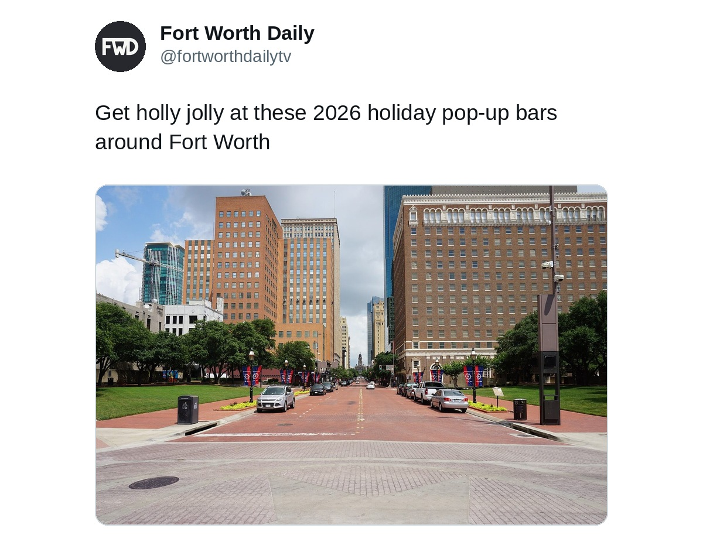

FWD
Fort Worth Daily
Just now · 🌎 · community · template writer
Just now · 🌎 · community · template writer
Even the grouchiest grinch will find Christmas cheer with a visit to one of these Fort Worth-area holiday pop-up bars, which return this year with even more tinsel.

FWD
story + scoring
{
"source": "CultureMap Fort Worth",
"kind": "rss",
"score": 0.9881,
"relevance": 2,
"url": "https://fortworth.culturemap.com/news/restaurants-bars/holiday-pop-up-bars-2026/",
"image_license": "wikimedia-cc",
"image_credit": "Photo: Michael Barera via Wikimedia Commons (CC BY-SA 4.0)"
}